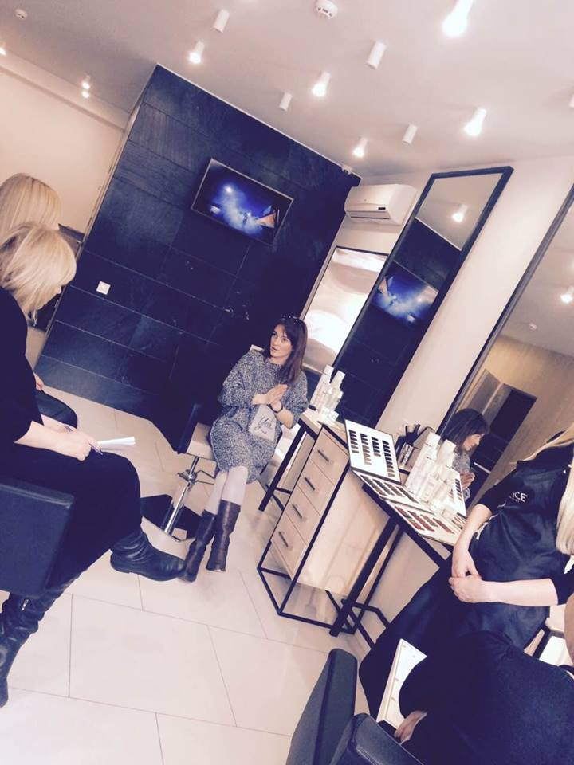
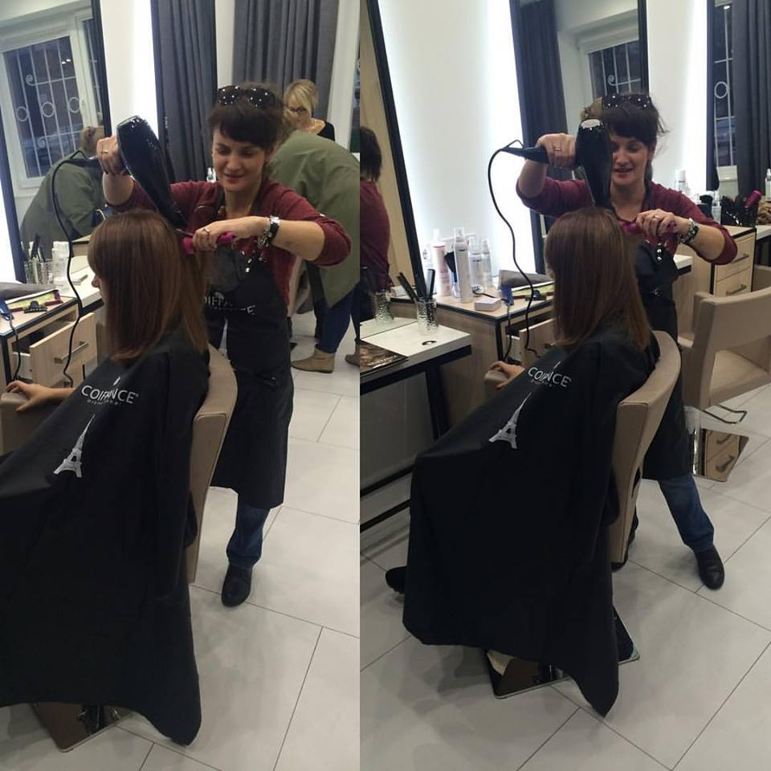
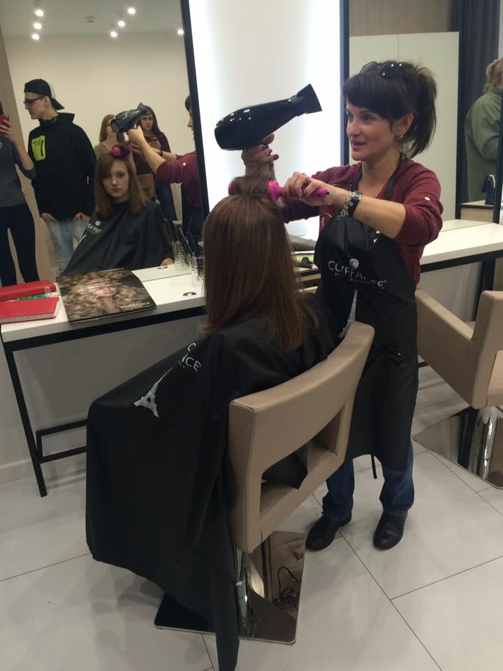

Мабуть кожна жінка має у запасі свою страшну історію про те, як вона невдало сходила в салон краси. Що там з нею той майстер тільки не витворяв! І от так фарбував, от так стриг, а потім от так зачісував. В результаті вийшла з салону краси... зовсім не красива... і не задоволена, та ще й голодна!)). Так, таких історій чимало. Кожна жінка прагне знайти не лише ідеального чоловіка на білому коні, а й ідеального майстра із чарівними ножицями, золотими ручками та якісними фарбами. Який знає твоє волосся, твої вподобання, грамотно може створити твій образ до відповідної події, порадити та ще й макіяж зробити! Фантастика! Напевно більше вимог, ніж до ідеального чоловіка! Так, дійсно свій, перевірений майтер, а що особливо - терплячий та ще й з власною думкою, це велика рідкість. У BEAUTY STUDIO IRYNY HUTSOL майстер ставить до себе власне саме такі вимоги - бути ідеальним майстром-стилістом для кожного клієнта.
У BEAUTY STUDIO Ірини Гуцол нема спокою вдосконаленню. Майстер любить свою справу, любить вести діалоги із клієнтами, прислухатись до них, що дуже важливо. Найкращою рекомендацією для майстра є відгуки клієнтів, і той факт, що 80% клієнтів є постійними. Коли у Голівуді набирає популярності нова техніка фарбування, стрижка, зачіска чи макіяж - в Beauty Studio Ірини Гуцол вже її успішно застосовують, та радують новими образами своїх клієнтів.
Ще одна якісна ознака хорошо майстра-стиліста це захист та відновлення волосся. Сказати прямо це "занудна частина". Так би сказали ті, хто ще ніразу не обпікався на горе-майстрах, виходячи з салону краси із абсолютно мертвим волоссям, яке на дотик нагадує губку для миття посуду. У справжнього професіонала завжди мають бути якісні фарби, засоби для захисту для фарбованого волосся, відновлення пошкодженого волосся. Адже, не тільки в гарно підібраному кольорі чи стрижці - вся краса, а власне краса волосся - у здоровому його вигляді.
Звідки Ви вийдете 100% задоволеними?
Запрошуємо у BEAUTY STUDIO IRYNY HUTSOL, де Ви знайдете усі чесноти ідеального майстра-стиліста, звідки вийдете на 100% задоволеними собою! До того ми й прагнемо!
!098 584 4000 ЧЕКАЄМО!